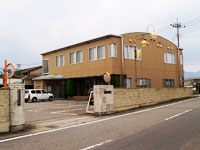

会長あいさつ
前橋管工事組合青年部 命水会
会長 狩野 和彦
こんにちは。今年度の通常総会において、大澤直前会長の後を受け、命水会会長に
就任しました狩野和彦です。
命水会も今年で５年目となりました。まだまだ若い会でありますが、より良い会に
していくために、なるべく多くの仲間で意見やアイデアを出し合い、活動を盛り上
げる土台を作っていきたいと思います。
「若いときの苦労は、買ってでもせよ」と言う言葉がありますが、若いうちの苦労
は、今後の人生において必ず生かすことができると思います。
「苦労」という経験は「成長」するには最適な手段ですので、みんなで苦労しながら、そして、楽しく元気に活動していければと思います。
また、活動に関しましては、今年度も昨年同様納涼祭、七夕まつり・前橋祭りの清
掃ボランティア、各種講習会・勉強会などのを考えています。
つきましては、会員のご家族、関係各位の皆様に於かれましては、昨年度同様ご協
力とご支援をお願いいたします。
これから１年間、皆様のご協力の下、微力ではありますが全力で頑張って参ります
ので、お力添えを宜しくお願いいたします。
連絡先

前橋市管工事協同組合青年部 命水会
〒371-0854 群馬県前橋市大渡町1丁目18-2 前橋市管工事協同組合会館内
TEL.027-251-7509 FAX.027-253-7259
大きな地図で見る